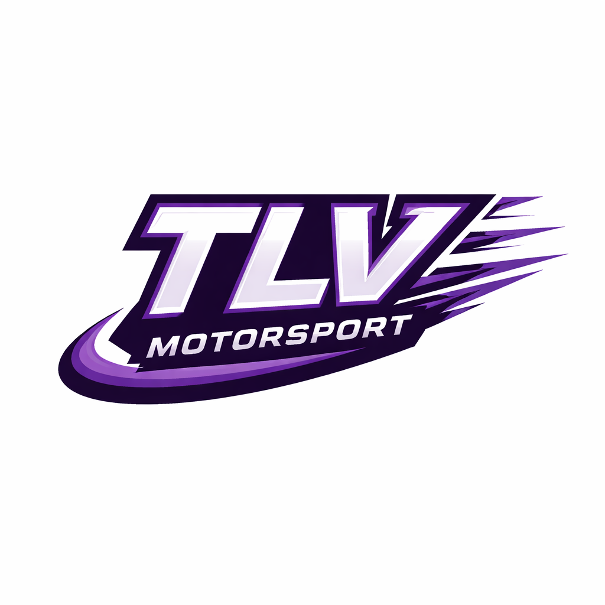

The Lost Violets • Simracing • Endurance Racing
TLV Motorsport – The Lost Violets – steht für modernes Simracing, Teamgeist und kompromisslosen Rennsport. Unser Fokus liegt auf Le Mans Ultimate, Endurance Events und täglichen LMU-Rennen.
Le Mans Ultimate
Endurance Racing
Hypercar & GT
The Lost Violets
Nächstes Rennen startet in
Le Mans
Heute • 20:00 Uhr
Spa-Francorchamps
Heute • 22:00 Uhr
Barcelona
Morgen • 19:30 Uhr